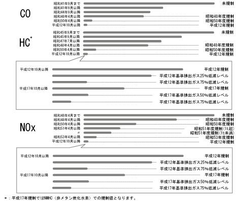

| Engine Outline |
| ● |
For the engine lineup, the 2GR-FE (3.5L gasoline) engine has been newly adopted and the 2AZ-FE (2.4L gasoline) engine continues to be used. There is no change to the 2AZ-FE engine.
|
| ● |
The 2GR-FE engine adopts a linkless electronic throttle system, Dual VVT-i (Dual Variable Valve Timing-intelligent: intake and exhaust continuously variable valve timing mechanism), ACIS (Acoustic Control Induction System: variable intake system) and a 2-system intake system, improving torque across the entire engine speed range, especially in the low to mid speed range, and achieving both high performance/high output and low fuel consumption/low emissions.
|
| ● |
Based on the Central Environment Council report on tightening of vehicle emission regulations, the change of emission test mode and mandatory advanced on-board diagnostic systems announced by the Ministry of Land, Infrastructure, Transport and Tourism in 11 2006 (Arial 18)*
1were addressed early, further improving environmental performance.
|
| ● | |
| ● |
The OBD (On-Board Diagnostic System) function, which self-diagnoses malfunctions in the emission control system, has been enhanced, and a function that automatically detects performance degradation of emission devices such as the catalyst and informs the driver has been added, out of consideration for environmental protection. For details, refer to the Repair Manual.
|
| HINT |
 |
 Measurement Method for Each Mode Measurement Method for Each Mode
|
| Comparison of Each Mode
|